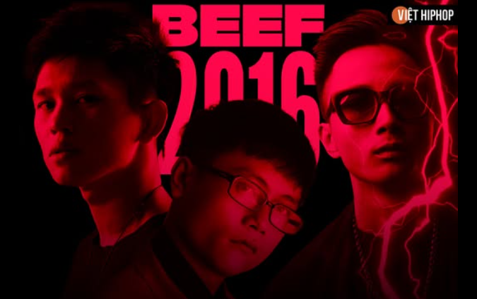
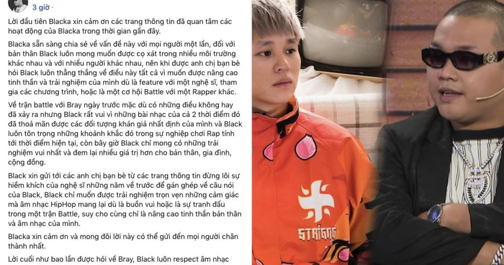

TRẬN BEEF NAM BẮC 2016
BEEF 2016
- Tổng quan.
Sau giai đoạn hợp tác và hòa giải giữa các tổ chức như G-Family, GVR, và EvB, những mâu thuẫn nội bộ vẫn âm ỉ tồn tại. Đến năm 2016, các xung đột cá nhân, khác biệt tư tưởng và phong cách giữa các rapper đã bùng nổ thành một cuộc chiến quy mô lớn, với sự tham gia của nhiều tên tuổi như Rhymastic, B Ray, Young H, Acy, Blacka, và đặc biệt là bộ đôi Ếch và Báo (EvB).
- Nguyên nhân và bối cảnh hình thành beef
Mâu thuẫn vùng miền
Miền Nam phát triển mạnh mẽ hơn về hoạt động rap, tổ chức nhiều sự kiện Freestyle Online: Má Mày & Thằng Cha Mày,Phục Sinh Cypher, Lost Talent, tạo điều kiện cho các rapper trẻ thể hiện. Miền Bắc tuy có dấu hiệu gắn kết nhưng vẫn bị đánh giá là thiếu sự bùng nổ so với miền Nam.
Xung đột tư tưởng và chính trị
Một số rapper bắt đầu đưa yếu tố chính trị – xã hội vào âm nhạc, như bài “DMCS” của Nah, gây tranh cãi trong cộng đồng. Bộ đôi EvB nổi bật với các bài rap châm biếm, phản ánh hiện thực, như “Lạy Chúa Ông Can”, “Bố Em Là Cán Bộ”, khiến họ trở thành tâm điểm của nhiều luồng ý kiến trái chiều. Mâu thuẫn cá nhân Mâu thuẫn giữa Blacka và Rhymastic phát sinh từ cuộc thi Freestyle Online, khi Blacka công khai chỉ trích chương trình do Clog tổ chức. Các anh em của Young H như Sol Bass, BRay và LJ cũng bị cuốn vào cuộc chiến.
- Diễn biến cuộc beef
Giai đoạn khởi đầu
EvB trở về Việt Nam, tổ chức tour diễn và trình bày bài “Không Quen”, được cho là nhắm đến Blacka. Cuộc gặp mặt giữa hai bên tại Sài Gòn Social Club dẫn đến xô xát, khiến nhiều người bị thương và công an phải vào cuộc.
Bùng nổ diss track
Rhymastic tung “Bản Kiểm Điểm”, gây phản ứng dữ dội từ cộng đồng miền Bắc. EvB đáp trả bằng “Bố Mày Từ Thiện”, một trong những bản hit lớn nhất sự nghiệp của họ. Các rapper khác như ACY, LJ, VickyBraak, ICD cũng tham chiến với hàng loạt bài diss như:
- “When I’m Coming”
- “Ngược Đời”
- “An Ninh Thủ Đô”
- “Back To Da Game PT.2”
- “Hòn Ngọc Biển Đông”
- ...
Cao trào và kết thúc
Bray và Blacka tuyên bố kết thúc mâu thuẫn bằng một trận battle âm nhạc đúng nghĩa. Cuộc beef chính thức khép lại vào đầu tháng 10 năm 2016, nhưng dư âm vẫn kéo dài đến các năm sau.
Post Fb của Blacka
- Tác động đến cộng đồng rap Việt
Định hình thế hệ rapper mới
Cuộc beef giúp nhiều rapper trẻ như BRay, Young H, EvB khẳng định tên tuổi. Các tổ đội như SpaceSpeaker, 95G trở nên nổi bật hơn trong cộng đồng.
Thay đổi tư duy cộng đồng
Người nghe bắt đầu quan tâm hơn đến nội dung lời rap, thông điệp xã hội, và tư duy nghệ thuật. Rap không còn chỉ là âm nhạc đường phố, mà trở thành công cụ phản biện xã hội và thể hiện bản sắc cá nhân.
Tạo tiền đề cho các cuộc beef sau
Beef 2016 mở đường cho trận chiến sau:
Beef 2018: gây tranh cãi về đạo đức và giới hạn nghệ thuật.